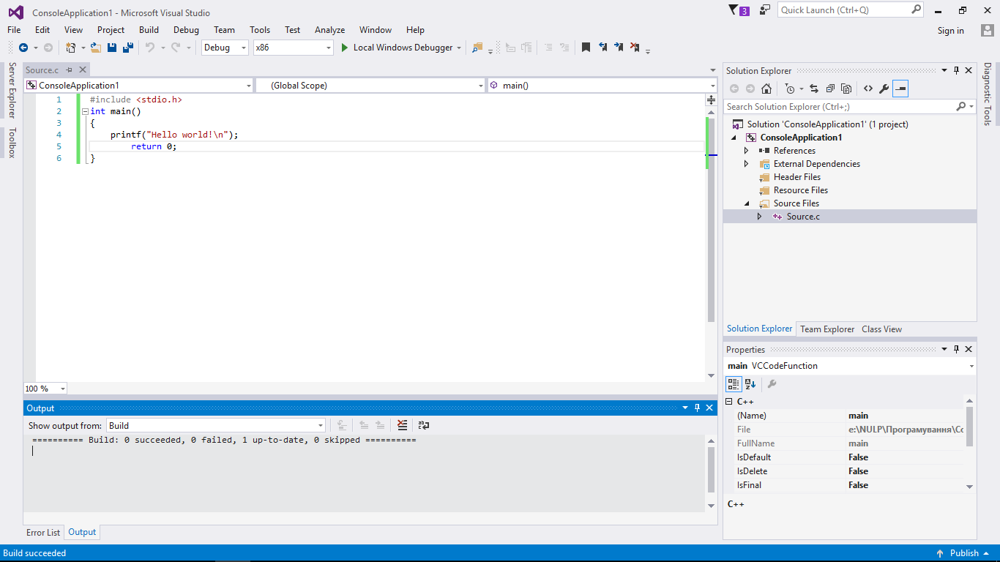
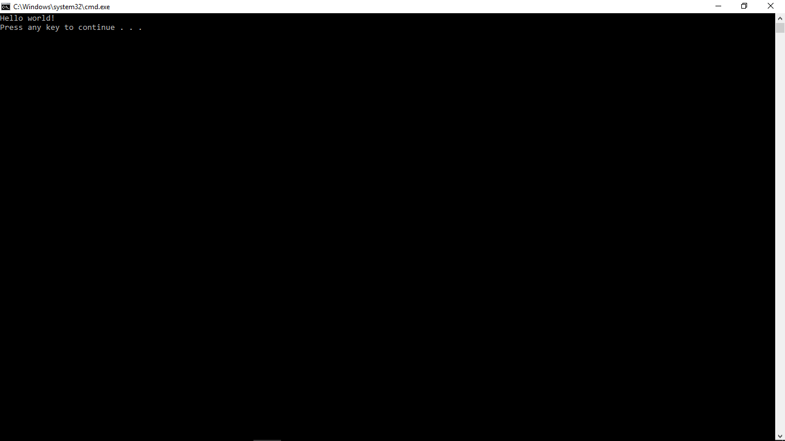

Лабораторна робота 2:
«Інтегроване середовище розробки програм Visual C++ 2015 та вбудований текстовий редактор»
Мета роботи:
- познайомитися з послідовністю кроків, які необхідно виконати в iнтегрованому середовищі Microsoft Visual C++ 2015, при розробці найпростішої програми;
- познайомитися з вбудованим текстовим редактором інтегрованого середовища Visual C++ 2015.

Основні команди вбудованого текстового редактора інтегрованої системи Visual C++ 2015:
- Ctrl+S - зберегти текст програми;
- Ctrl+Shift+B – компілювання програми;
- Ctrl+F5 – запуск програми.
Текст програми на мові С набраний за допомогою вбудованого редактора
#include
int main()
{
printf("Hello world!\n");
return 0;
}

Висновок:
На лабораторній роботі ми познайомились з послідовністю кроків, які необхідно виконати в iнтегрованому середовищі Microsoft Visual C++ 2015, при розробці найпростішої програми. Також ознайомилися з вбудованим текстовим редактором інтегрованого середовища Visual C++ 2015.